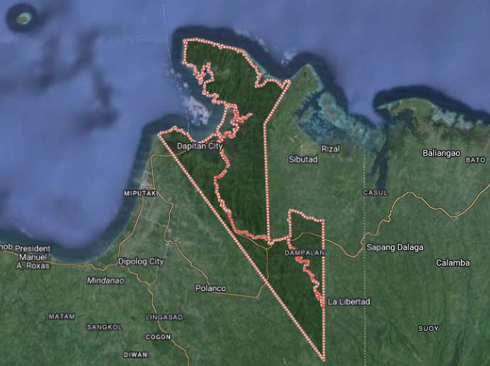

Welcome to Dapitan City
Welcome to Dapitan City “It is located on a beautiful bay which looks towards the West, on a kind of island especially made for it as if to isolate it from the vulgar world,a river which to accommodate it, has gladly consented to divide itself into two, its two silvery arms encircling it and bringing it toward the sea as an offering, for being the most beautiful thing that it could find in its tortuous and undulating pilgrimage through mountains and valleys, through woodlands and plains.”
DAPITAN BEGINNINGS
Dapitan traces its beginnings long before the Spanish conquistadores set foot on the island of Mindanao. Its earliest settlers were the Subanens, a nomadic tribe of Indonesian stock known to have settled and lived along the banks of the river or “suba” out of which their present day tribal identify originated. Fear of pirates taking shelter during foul weather in the natural harbors of Dapitan’s irregular coastlines forced the timid Subanens to move further into the hinterlands.
Early cartographers of the Philippines showed Dapitan’s location in their maps of Mindanao in varying names in which they had known it such as: “Dapito” in Kaerius’ map of 1598, “Dapite” in Dudley’s map of 1646, “Dapyto” in Sanson’s map of 1652, and “Dapitan” in Moll’s map of East Indies 1729 and in Murillo Velarde’s map of 1734. In various historical reports, there are authentic accounts of trading voyages in the early periods and it is hinted that commercial relations may have been established with Dapitan, already a thriving settlement. It is probable that interaction occurred with the traders and there may have been a mingling of culture.
In addition, the divergent cultures brought by the European invaders, the Americans, the Japanese and the different Visayan groups of settlers in Dapitan which caused the emergence of a distinct culture the present crop of Dapitanons have.
FROM A SMALL TOWN TO A HISTORICAL CITY
From a small town replete with history, Dapitan took a giant step forward and became a chartered city by virtue of Republic Act No. 3811 which was signed by then President Diosdado Macapagal on 22 June 1963, thus becoming the first city in the Province of Zamboanga del Norte. It is officially known as the “Shrine City of the Philippines”. It is one of the four cities of Region IX (Map 1) these are Zamboanga City, Pagadian City, and Dipolog City. Today, it is at the threshold of finding its rightful place in the global village.
ere lies the greatest potential of the City with respect to the Region and the regional economy. Its value in the tourism industry cannot be overstated and with proper support from the national leadership, this potential can still prove to be the triggering device towards development.
